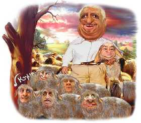

Удивительно, насколько ясным стало отношение к украинской политике «большого соседа». Откройте российские сайты новостей – практически каждый из них взахлеб рассказывает о сегодняшнем штурме оппозицией здания Центризбиркома.
Мало того, и «Газета.ру», и «РосБизнесКонсалтинг», и даже ИТАР-ТАСС не постеснялись нарушить элементарный закон журналистики и высказали все комментарии сторонников Виктора Януковича. Де, оппозиция и ЦИК захватила, и сервер пыталась штурмовать и вообще – прямо озверела. Вот только «зверей» почему-то и не спросила. Да и сам «хозяин» здания, глава Центризбиркома Сергей Кивалов оказались как-то в стороне. Действительно – зачем разбираться, что происходит в Украине на самом деле, когда уже позвонил Степан Гавриш и рассказал кучу всего интересного.
Что было
Думаю, нет смысла повторяться, что никакого захвата Центризбиркома Украины сторонниками кандидата в президенты страны Виктора Ющенко не было. Напомним: ИТАР-ТАСС наврало о том, что после обеда стороннники Ющенко захватили несколько этажей Центризбиркома. Руководитель пресс-службы Центризбиркома Зоя Казанжи отметила, что нашеукраинцы действительно находились в ЦИК, но во-первых, как наблюдатели, а во-вторых - до полудня. Поэтому после обеда они ну уж никак, как бы ни хотели этого российские СМИ, здание штурмовать не могли.
Зато Казанжи отметила, что в здании "остались не менее 10 сторонников другого кандидата в президенты Виктора Януковича". Доверенное лицо кандидата в президенты Украины в ЦИК Виктора Януковича, координатор парламентского большинства Степан Гавриш заявил, что представители штаба Януковича будут "дежурить в ЦИК до окончательного подсчета голосов по итогам первого тура президентских выборов.
И с сервером оказалось все в порядке. Сам Кивалов (а уж его-то слово, как ни крути, вес имеет вполне солидный) сказал, что «зависания» ЦИКовского сервера – их собственный баг. После этого под раздачу попал руководитель компьютерного управления ЦИК "за неоперативную обработку информации о результатах выборов президента Украины 31 октября". Кроме того, по словам Кивалова "рассматривается также вопрос о расторжении договора с организацией, выигравшей тендер на обработку поступающей в ЦИК информации о ходе выборов".
В чем дело?
Риторический вопрос «а был ли мальчик?» таким образом соглашается с ответом о несуществовании мальчика. Теперь следует разобраться, кому все это выгодно.
Шумиха, поднятая Гавришем и другими сторонниками Януковича в Украине улеглась достаточно быстро – правда восторжествовала. Но заданием представителя парламентского большинства, скорее всего, была чернуха в российских СМИ, которым, подхватив новость с крыла сороки уж как-то совсем несподручно было бы давать опровержение. Сами себе представьте: вывешивает крупное издание новость – «Ой, блин, ребята, простите, лоханулись! Нам наврали, а мы поверили». Если агентство не в состоянии проконтролировать достоверность информации о том, что происходит под его боком («Украина – не Россия», как говаривал Данилыч, но достаточно близко для того, чтобы реально разбираться в ситуации), то как можно верить информации из-за рубежа?
Неужели если позвонит восьмой помощник седьмого заместителя Буша и скажет, что Керри от обиды за проигрыш взорвал Капитолий, то это сразу станет топ-новостью?
Не станет.
|
Потому что в агентствах работают какие-никакие, а профессионалы. И у них тоже есть цензура и определенная редакционная политика, которая в учреждениях такого класса, как РИА «Новости» или ИТАР-ТАСС определяется непосредственно из Кремля.
Кошки дружат с крысами
что является неправильным по законам природы, но вполне допустимым в политических играх. Кремль решил не провоцировать изменений в Украине, которые могут произойти с приходом к власти представителей от оппозиции и поддержать кандидата от власти. Януковича.
Удивительно, как мало знает простой российский люд о том, кого поддерживает всенародно любимый президент РФ Путин, который в прошлом был вполне классным сотрудником КГБ.
КГБшник Путин поддерживает бывшего заключенного, имевшего три судимости.
Министерство иностранных дел Украины искало и не нашло в других странах мира "действующих монархов, президентов или премьер-министров", которые имели судимости за криминальные преступления. Об этом речь идет в ответе министра иностранных дел Константина Грищенко на соответствующий запрос народного депутата Украины Юрия Павленко. Как сообщил председатель украинского внешнеполитического ведомства, МИД "проанализировало официальные источники, содержащие биографические данные действующего руководства иностранных государств, в частности Европы - официальные веб-страницы руководителей государств и правительств, коронованных лиц, официальные печатные издания" и т.д. "В таких биографических ведомостях, – пишет Грищенко Павленко, - имеющих официальный и публичный характер и в основном выразительную PR-нагрузку, не упоминается вероятность совершения криминальных преступлений, погашенных или отмененных уголовных дел действующими монархами, президентами или премьер-министрами".
Итак, если вследствие какого-либо чуда президентские выборы выиграет Виктор Янукович, то Украина рискует стать уникальной и единственной государством в мире, первым лицом которого будут бывший уголовный преступник. Что совсем не мешает Владимиру Путину высказывать Януковичу теплые слова поддержки и даже приглашать его на свой день рождения.
Выходят что кошки и крысы в данном случае дружат очень тесно.
Цензура в России
скорее всего, даже еще сильнее, чем у нас. Поскольку если в Украине кто-то и имеет наглость поднимать голову (правда не без пристального внимания всяких Сивковичей и Генпрокуратуры), то в РФ вообще нет оппозиционной прессы, которая была бы известной и весомой («Лимонка» и иже с ними – все же богема на общем фоне настроения в бывшей империи). Я не спорю, что российским СМИ украинские выборы близки ровно настолько, насколько нам с вами – проблема освещения улиц на востоке Северной Кореи. СМИ тоже хотят есть и это нормально – вся пресса продажна, потому что в большей своей части кому-то принадлежит. А владельцы масс-медиа, кроме интереса политического имеют еще и экономический, из-за которого и приходится вводить цензуру.
Так же как и в России, Украине пришлось делать выбор – кто за кого. Только если там против Путина никто не может гавкнуть, то мы на данный момент имеем два четких лагеря – «оранжевый» и «бело-голубой».
Несмотря на недавний так называемый «журналистский бунт», результатом которого стало появление декларации о честности и объективности журналистов на самом деле ничего так и не изменилось. Провластные каналы по-прежнему поддерживают своего кандидата и все также подают информацию в своем ключе. Даже если посмотреть на фамилии тех, кто под этой декларацией подписался – руководство или основных журналистов компаний там увидеть сложно.
Имеем
в результате то, что удовлетворяет одних и оскорбляет других. Российские СМИ раскручивают образ оппозиции, как кровожадных, неорганизованных зверей, рвущихся к власти.
Они делают то, что им укажет Кремль, которому захотелось играть не с Ющенко, а с Януковичем. Поскольку в противном случае как раз последний был бы раздавлен собственной же биографией. А российским масс-медиа либо наплевать на Украину, либо слово ВВ для них непоколебимо
|
![[ Japanese flag ]](../kraiany/images/jp.png)

![[ Ukranian flag ]](../kraiany/images/uk.png)